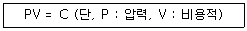
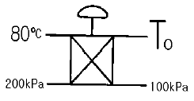
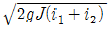
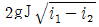
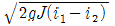
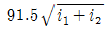
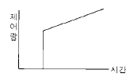

에너지관리산업기사 (2002-03-10 기출문제)
1과목: 열역학 및 연소관리
1. 석탄의 열전도율은 극히 작아서 내화벽돌의 그것과 같은 정도가 아니면 절반 정도이다. 석탄의 열전도율은 대략 얼마 정도인가?
- 0.012∼0.029kcal/m.h.℃
- 0.12∼0.15kcal/m.h.℃
- 0.30∼0.45kcal/m.h.℃
- 0.030∼0.045kcal/m.h.℃
(정답률: 67%)

2. 연소실내 가스를 완전 연소시키기 위한 조건으로 잘못된 것은?
- 연소실 온도를 착화온도 이상으로 충분히 높게 한다.
- 연소실의 크기를 연소에 필요한 크기이상으로 한다.
- 연소실은 기밀을 유지하는 구조로 한다.
- 이론공기량을 공급한다.
(정답률: 61%)
3. 다음 중 석탄의 공업분석 항목이 아닌 것은?
- 고정탄소
- 휘발분
- 질소분
- 수분
(정답률: 66%)
4. 액체 연료의 저장방법으로 적절치 못한 것은?
- 통기관을 설치하여야 한다.
- 탱크의 강판두께는 3.2mm 이상이어야 한다.
- 증발 소모가 적어야 한다.
- 사각기둥형의 탱크를 사용하여야 한다.
(정답률: 81%)
5. 다음 기체연료 중에서 비중이 가장 큰 것은?
- 메탄
- 에탄
- 에틸렌
- 프로판
(정답률: 84%)
6. 기체연료의 관리에 대한 문제점을 열거한 내용중 잘못 설명된 것은?
- 저장이나 수송에 어려움이 있다.
- 누설시 화재, 폭발의 위험이 크다.
- 연소 효율이 낮고 연소 제어가 어렵다.
- 시설비가 많이 들고 설비공사에 기술을 요한다.
(정답률: 87%)
7. 다음 중 연료비가 가장 큰 연료는?
- 토탄
- 갈탄
- 역청탄
- 무연탄
(정답률: 81%)
8. 액체연료를 분석한 결과 그 성분이 다음과 같았다. 이 연료의 연소에 필요한 이론공기량은? (단, 탄소 : 80%, 수소 : 15%, 산소 : 5%)
- 10.95 Nm3/kg
- 12.33 Nm3/kg
- 13.56 Nm3/kg
- 15.64 Nm3/kg
(정답률: 44%)
9. 탄소 72.0%, 수소 5.3%, 황 0.4%, 산소 8.9%, 질소 1.5%, 수분 0.9%의 조성을 갖는 석탄의 저위발열량(kcal/kg)은?
- 약 5,000
- 약 6,000
- 약 7,000
- 약 8,000
(정답률: 56%)
10. 중유의 자동점화시 기동(가동) 스위치를 ON에 넣은 후 시퀀스 제어의 올바른 진행 순서는?
- 송풍기모터작동 → 프리퍼어지 → 1,2차공기댐퍼작동 → 버너모터작동 → 점화용버너착화 → 주버너착화
- 버너모터작동 → 점화용버너착화 → 송풍기모터작동 → 1,2차공기댐퍼작동 → 프리퍼어지 → 주버너착화
- 버너모터작동 → 송풍기모터작동 → 1,2차공기댐퍼작동 → 프리퍼어지 → 점화용버너착화 → 주버너착화
- 송풍기모터작동 → 1,2차공기댐퍼작동 → 프리퍼어지 → 버너모터작동 → 점화용버너착화 → 주버너착화
(정답률: 52%)
11. 연돌의 높이가 50m이고, 배기가스의 비중량이 1.2kg/m3(0℃, 1atm)일 때 만약 배기가스의 온도가 130℃이고 외기의 비중량이 1.⑤kg/m3라면 이 굴뚝의 이론 통풍력은?
- 7.5 mmH2O
- 11.9 mmH2O
- 19.5 mmH2O
- 23.7 mmH2O
(정답률: 56%)
12. 기준 증발량 5000kg/h의 보일러가 있다. 보일러효율 88%일 때에 벙커C유의 공급량은 약 얼마인가? (단, 벙커C유의 저발열량은 9700kcal/kg, 비중은 0.96으로 한다.)
- 450 ℓ /h
- 400 ℓ /h
- 380 ℓ /h
- 330 ℓ /h
(정답률: 31%)
13. 다음 중 인화점 측정기와 관계없는 것은?
- 펜스키 - 마텐
- 타그
- 클리브랜드
- 헴펠
(정답률: 63%)
14. 고위발열량과 저위발열량의 차이는?
- 수분의 증발잠열
- 연료의 증발 잠열
- 수분의 비열
- 연료의 비열
(정답률: 70%)
15. 다음 중 고위발열량 Hh를 바르게 나타낸 식은?
- Hh = Hℓ + 600 - (9H + W)
- Hh = Hℓ + 600 - (6H - W)
- Hh = Hℓ - 600 + (9H + W)
- Hh = Hℓ + 600 x (9H + W)
(정답률: 61%)
16. 연도가스를 분석하였더니 (CO2)=12.0%, (O2)=6.0%였다. (CO2)max은 몇 % 인가?
- 16.8
- 18.8
- 20.8
- 22.8
(정답률: 39%)
17. 프로판(C3H8) 11kg을 이론공기량으로 완전연소시켰을 때의 습연소가스의 부피(Nm3)를 계산하면? (단, 탄소와 수소의 원자량을 각각 12와 1로 계산한다.)
- 115.8
- 127.9
- 133.2
- 144.5
(정답률: 31%)
18. 다음은 댐퍼(damper)를 설치하는 목적에 관해서 설명한 것이다. 이중 해당되지 않는 것은?
- 통풍력을 조절한다.
- 가스의 흐름을 교체한다.
- 가스의 흐름을 차단한다.
- 가스가 새어나가는 것을 방지한다.
(정답률: 70%)
19. 주위 공기와 배기가스의 밀도차를 이용한 통풍방식은?
- 흡인통풍
- 압입통풍
- 평형통풍
- 자연통풍
(정답률: 69%)
20. 프로판가스 1 Nm3를 연소시키는데 필요한 이론공기량은 몇 Nm3인가?
- 21.92
- 22.61
- 23.81
- 24.62
(정답률: 64%)
2과목: 계측 및 에너지진단
21. 다음은 열역학 제1법칙을 설명한 것이다. 옳은 것은?
- 열은 온도가 높은 곳에서 낮은 곳으로 흐른다.
- 에너지 보존의 법칙이다.
- 한계에 있어서 유한수의 조작으로 절대 0도에 도달할 수는 없다.
- 얻은 열을 완전히 일로 변환시킬 수 있는 장치는 없다.
(정답률: 85%)
22. 내용적 20m3의 용기에 공기가 들어 있다. 처음에 그 압력 및 온도를 측정하였더니 6kg/cm2, 20℃였는데 열을 공급하고 1시간후에 측정하였더니 압력이 7kg/cm2이었다. 이 사이에 용기내에 있는 공기에 전해진 열량은 대략 얼마인가? (단, 공기 정적비열 0.17kcal/kg℃, 비중량 1.29kg/Nm3, 용기 변형은 없다.)
- 1800kcal
- 1250kcal
- 1189kcal
- 1158kcal
(정답률: 29%)
23. 아래 가스 중에서 기체 상수(gas constant)가 제일 작은 것은?
- N2
- CO
- CO2
- CH4
(정답률: 50%)
24. 표준압력(1atm)하에서 순수한 물의 빙점은 랭킨(Rankine)온도로 몇 °R이 되는가?
- 0
- 100
- 273.15
- 491.67
(정답률: 57%)
25. 열역학 제1법칙은 다음 중 어떠한 것과 관련이 있는가?
- 시스템의 열역학적 반응속도
- 시스템의 반응방향
- 시스템의 온도효과
- 시스템의 에너지 보존
(정답률: 81%)
26. 어느 열기관이 45PS를 발생할 때 매 시간당 일을 열량(kcal/h)으로 환산하면?
- 20,000
- 25,000
- 28,440
- 23,650
(정답률: 58%)
27. 다음 식은 어느 에너지를 나타내는 식인가?

- 유동 에너지
- 위치 에너지
- 내부 에너지
- 일
(정답률: 63%)
28. 비열에 대한 설명으로 틀린 것은?
- 비열은 1℃의 온도를 변화시키는데 필요한 단위 질량당의 열량이다.
- 정압비열은 압력이 일정할 때 온도변화에 따른 엔탈피의 변화이다.
- 기체에 대한 정압비열과 정적비열은 일반적으로 같지 않다.
- 정압비열은 정적비열보다 클 수도, 작을 수도 있다.
(정답률: 72%)
29. 다음 중 증기선도(h-s선도)로 부터 찾기가 곤란한 것은?
- 포화수의 엔탈피
- 습증기의 엔탈피
- 습증기의 엔트로피
- 과열증기의 엔트로피
(정답률: 64%)
30. 다음 중 압축비에 대한 정의로서 옳은 것은?
- 격간체적 / 실린더체적
- 실린더체적 / 격간체적
- 격간체적 / 행정체적
- 행정체적 / 격간체적
(정답률: 70%)
31. 그림과 같이 교축밸브(throttling valve)를 통과하는 공기가 있을 때 To는 몇 도인가? (단, 공기는 이상기체로 가정하고, 교축밸브는 단열이라고 가정한다.)

- 0℃
- 40℃
- 80℃
- 160℃
(정답률: 63%)
32. 노즐에서 이론적으로는 외부에 대해 열의 수수가 없고 또 외부에 대한 일을 하지도 않는다. 유입속도를 무시할 때 유출속도 V는 어떻게 표시되는가? (단, i는 엔탈피를 나타냄)




(정답률: 75%)
33. 물을 압축시키는 펌프가 가역단열과정으로 작동된다. 펌프의 입구상태는 100Kpa, 30℃이고 출구상태는 5Kpa일 때 펌프의 단위 질량당 소요압축은? (단, 운동에너지와 위치에너지의 변화는 무시되며, 펌프 입출구에서의 물에 대한 밀도는 996.016kg/m3로 일정)
- 0.0049KJ/kg
- 4.92KJ/kg
- 2.56KJ/kg
- 0.0026KJ/kg
(정답률: 43%)
34. 증기원동소내 보일러의 평균 온도는 165℃이고, 입출구에서의 단위 질량당 엔탈피 차이는 2066.3KJ/kg이며, 응축기의 평균 온도는 54℃, 입출구에서의 단위 질량당 엔탈피 차이는 1898.4KJ/kg이다. 펌프 및 터빈에서의 열전달율을 무시할 때 단순 증기원동소내 엔트로피 변화율은 얼마인가?
- -22.63KJ/kg.K
- 47.68KJ/kg.K
- -1.09KJ/kg.K
- 10.52KJ/kg.K
(정답률: 39%)
35. 이상기체의 비열에는 정적비열(Cv)과 정압비열(Cp)이 있다. 이들 사이의 관계중 올바른 것은?
- 정적비열과 정압비열은 서로 아무런 관계가 없다.
- 정적비열은 정압비열과 항상 같다.
- 정적비열은 정압비열보다 항상 크다.
- 정적비열은 정압비열보다 항상 작다.
(정답률: 64%)
36. 다음 중 열의 일당량(kg.m/㎉)으로서 적당한 것은?
- 1/427
- 427
- 632
- 860
(정답률: 70%)
37. 다음 중 카르노 사이클의 특색이 아닌 것은?
- 가역 사이클이다.
- 수열량과 방열량의 비가 수열시의 온도와 방열시의 온도의 비와 같다.
- P-V 선도에서는 직사각형의 사이클이 된다.
- 열효율이 고온열원 및 저온열원의 온도만으로 표시된다.
(정답률: 67%)
38. 정적 용기내에 온도 250℃, 건도 30%의 습증기가 들어 있다. 이를 냉각하여 100℃가 될 때 건도는? (단, 100℃-포화액의 비체적 Vf = 0.001044m3/kg, 건포화증기의 비체적 Vg = 1.6729m3/kg이고, 250℃-포화액의 비체적 Vf = 0.001251m3/kg, 건포화증기의 비체적 Vg = 0.⑤013m3/kg이다.)
- 1.1%
- 0.89%
- 2.1%
- 0.4%
(정답률: 45%)
39. 압력 2㎏/㎝2, 체적 0.5m3인 공기가 일정압력하에서 체적이 0.7m3으로 팽창시 내부에너지가 25㎉만큼 증가하였다면 이 때 소요 열량은 몇 KJ인가?
- 34.4
- 93.7
- 127.4
- 143.9
(정답률: 17%)
40. △E = Q = Cv△T가 의미하는 것 중 가장 타당한 설명은?
- 이상기체의 열량은 곧 내부에너지와 같다.
- 이상기체의 내부에너지 변화는 온도만의 함수이다.
- 내부에너지의 미분은 열량과 같다.
- 실제 기체와의 에너지 차이인 △E가 곧 열량이다.
(정답률: 62%)
3과목: 열설비구조 및 시공
41. 계단상 입력(STEP INPUT)변화에 대한 아래 그림은 어떤 제어동작의 특성을 나타낸 것인가?

- 비례-미분동작
- 비례-적분동작
- 적분동작
- 비례-적분.미분동작
(정답률: 71%)
42. 올쟈트가스분석기로 배기가스 분석시 가스분석 순서로 옳은 것은?
- O2 → CO → CO2
- CO2 → O2 → CO
- CO → O2 → CO2
- CO → CO2 → O2
(정답률: 73%)
43. 차압식유량계의 압력손실의 크기를 표시한 것 중 옳은 것은?
- 오리피스 ＞ 플로우노즐 ＞ 벤츄리관
- 플로우노즐 ＞ 오리피스 ＞ 벤츄리관
- 벤츄리관 ＞ 플로우노즐 ＞ 오리피스
- 오리피스 ＞ 벤츄리관 ＞ 플로우노즐
(정답률: 67%)
44. 연소가스의 현장 분석기에 시료가스 채취 시스템을 사용할 경우 고려할 사항아 아닌 것은?
- 가스 온도를 될 수 있는대로 낮추어서 분석하기 좋게 한다.
- 시료 채취 시스템이 막히지 않게 한다.
- 시료 채취 시스템으로 인한 시간 지연을 고려한다.
- 가스 채취는 중심부에서 하고 벽에 가까운 가스는 회피한다.
(정답률: 73%)
45. P동작의 비례이득이 4일 경우 비례대는 몇 [%]인가?
- 20%
- 25%
- 30%
- 40%
(정답률: 79%)
46. 보일러의 압력계가 10 atg를 표시하고 있고, 이 때의 대기압이 750 mmHg였다. 이 보일러의 절대압력(Kg/cm2)은?
- 11.02
- 21.04
- 32.06
- 8.02
(정답률: 64%)
47. 다음 중 고속, 고온 및 고압 유체의 유량 측정에 가장 알맞는 것은?
- 오리피스
- 플로노즐
- 벤츄리
- 피토관
(정답률: 55%)
48. 다음 압력계중 가장 정도가 낮은 것은?
- 부르돈관압력계
- 분동식압력계
- 경사식액주압력계
- 전기식압력계
(정답률: 50%)
49. 고점도 유체나 작은 유량도 측정할 수 있으며, 슬러리나 부식성 액체의 유량 측정이 가능하나 압력손실이 커 정밀 측정에는 부적당하고 구경이 100mm이상의 대형은 값이 매우 비싼 이 유량계는? (단, 예를 들면 피스톤형 유량계가 있다.)
- 유속식 유량계
- 속도수두측정식 유량계
- 면적식 유량계
- 와류식 유량계
(정답률: 68%)
50. CA type 열전대의 온도측정 범위로 적당하지 않은 것은?
- -20℃∼300℃
- 300℃∼600℃
- 600℃∼1000℃
- 1000℃∼1600℃
(정답률: 58%)
51. 압력측정 범위가 약 10∼1500 mmH2O인 탄성식 압력계는?
- 캡슐식 압력계
- 브르돈관식압력계
- 링밸런스 압력계
- 다이어프램식 압력계
(정답률: 50%)
52. 보일러에 사용하는 급수 조절장치로 수위제어 방식에 적용되는 방식이 아닌 것은?
- 플로트식
- 전극식
- 전압식
- 열팽창식
(정답률: 59%)
53. 다음 중 세라믹법에 사용된 주성분은?
- Zr
- ZrO2
- Cr2O
- P2O5
(정답률: 72%)
54. 증유를 사용하는 로내의 온도를 일정하게 유지시키기 위한 제어량은?
- 노내의 압력
- 중유의 유출압력
- 중유의 유량
- 노내의 온도
(정답률: 62%)
55. 압력 측정에 사용할 액체의 특성 설명으로 틀린 것은?
- 점성이 클 것
- 열팽창계수가 적을 것
- 모세관 현상이 적을 것
- 일정한 화학 성분을 가질 것
(정답률: 79%)
56. 비접촉식 온도계의 특성 중에서 잘못 짝지어진 것은?
- 더모컬러 : 내화물의 내화도 측정
- 광고온계 : 한 파장의 방사에너지 측정
- 방사온도계 : 전 파장의 방사에너지 측정
- 색온도계 : 고온체의 색 측정
(정답률: 60%)
57. 제어계기의 공기압 신호의 압력 범위는 어느 정도인가?
- 0∼1.0 kg/cm2
- 0∼10 kg/cm2
- 1∼3 kg/cm2
- 0.2∼1.0 kg/cm2
(정답률: 68%)
58. 기체식 압력온도계에 쓰이는 기체만으로 이루어진 것은?
- 수소, 펜탄, 에틸에테르, 네온
- 헬륨, 네온, 수소, 질소
- 산소, 질소, 염소, 프레온
- 질소, 펜탄, 헬륨, 에틸에테르
(정답률: 69%)
59. process계 내에 시간지연이 크거나 외란이 심할 경우 조절계를 이용하여 설정점을 작동시키게 하는 제어방식은?
- 프로그램제어
- 케스케이드제어
- 피이드백 제어
- 시이퀸스 제어
(정답률: 77%)
60. -200°F는 몇 ℃인가?
- -128.9℃
- -93.2℃
- -111.8℃
- -168℃
(정답률: 59%)
4과목: 열설비취급 및 안전관리
61. 도염식 단요의 구조 부분과 관계가 먼것은?
- 화교
- 흡입구
- 연도
- 발열체
(정답률: 62%)
62. 다음의 단열재를 같은 두께로 보온시공을 했다면 보온효과가 가장 뛰어난 것은?
- 탄산마그네슘
- 스치로폴
- 유리면
- 탄화콜크
(정답률: 52%)
63. 보일러 강재의 부식 원인에 대한 설명으로 틀린 것은?
- 보일러수의 pH가 너무 낮다.
- 보일러수의 pH가 너무 높다.
- 수주에 함유된 실리카이온의 영향
- 수중에 함유된 산소의 영향
(정답률: 58%)
64. 다음 중 비중이 가장 작은 보온재는?
- 우레탄폼
- 우모펠트
- 탄화콜크
- 포옴 그라스
(정답률: 68%)
65. 다음은 보일러 부하가 너무 많이 걸려 미치는 영향에 대한 설명이다. 이 중 틀리는 것은?
- 보일러 설비안정성이 저하된다.
- 프라이밍을 발생하기 쉽다.
- 증발계수가 크게 된다.
- 전열면의 증발율이 크게 된다.
(정답률: 53%)
66. 보일러 급수에 관계되는 P(phenolphthalein) 알카리도를 설명한 것으로 틀린 것은?
- 수중의 중탄산염, 탄산염, 수산화물, 인산염, 규산염 등의 알칼리도 일부로서 pH 8.0보다도 높은 pH부분의 알칼리분 농도이다.
- 페놀프탈레인과 치몰본의 혼합지시약을 사용해서 유산으로 측정하여 그 소비량을 이에 상당한 CaCO3ppm으로 표시한 것이다.
- 물속의 알칼리분을 표시한 지수이다.
- 물속의 Ca2+, Mg2+의 양을 표시한 지수이다.
(정답률: 62%)
67. 내경 1m, 압력 10kg/cm2, 판의 허용인장응력 9kg/mm2, η = 0.80 부식에 대한 정수 1mm의 보일러 두께는?
- 6.94mm
- 7.94mm
- 8.94mm
- 9.94mm
(정답률: 40%)
68. 고온에서 염기성 슬랙과 접촉되는 곳에 사용할 수 있는 내화물은?
- 규석질 내화물
- 크롬질 내화물
- 마그네시아 내화물
- 사모트질 내화물
(정답률: 66%)
69. 다음 중 단열성 원료로 사용되지 않는 것은?
- 규조토
- 규석
- 석면
- 질석
(정답률: 38%)
70. 다음 중 나사이음에서 최대효율을 표현한 식은? (단, 마찰계수 μ = tanρ)
- tan2(45° + (ρ/2))
- tan2(45° + ρ)
- tan2(45° - (ρ/2))
- tan2(45° - ρ)
(정답률: 65%)
71. 다음 중 주철관의 접합법으로 적절치 않는 것은?
- 소켓 접합
- 플랜지 접합
- 메카니컬 접합
- 용접 접합
(정답률: 75%)
72. 다음 중 사용목적에 의한 요로의 분류는?
- 도염식요로
- 연속요로
- 소결요로
- 중유요로
(정답률: 73%)
73. 다음 중 보일러의 압력을 급격하게 올려서는 안되는 이유는?
- 압력계, 수면계의 파손원인이 된다.
- 보일러나 벽돌에 손상을 가져온다.
- 보일러의 순환을 방해한다.
- 보일러의 효율을 저하시킨다.
(정답률: 65%)
74. 보일러 급수의 탈기법 가운데 화학적 방법을 설명한 것으로 다음 중 관계없는 것은?
- 히드라진을 보일러 급수에 첨가하면 탈산소가 이루어진다.
- 아황산나트륨을 보일러 급수에 첨가하면 탈산소가 행하여 진다.
- 기체분압의 감소 및 가열에 의한 용해도 감소, 비등과 확산 등이 발생된다.
- 탄닌은 저압보일러용의 탈산소제로서 사용되고 있다.
(정답률: 45%)
75. 소성실 용적이 같고 피소성 제품과 연료도 같을 때 가열 능력이 가장 큰 것은?
- 셔틀(Shuttle)가마
- 터널(tunnel)가마
- 도염식 불연속 각 가마
- 도염식 불연속 둥근 가마
(정답률: 67%)
76. 산성내화물의 중요 화학성분의 형은?
- R2O형
- RO형
- RO2형
- R2O3형
(정답률: 70%)
77. 노벽을 통하여 전열이 일어난다. 노벽의 두께 200mm, 평균 열전도도는 3.3 Kcal/m.hr.℃ 이고, 노벽 내부온도는 400℃, 외벽온도 50℃ 라면 10시간 동안 잃은 열량은?
- 5775 Kcal/m2
- 66000 Kcal/m2
- 57750 Kcal/m2
- 11550 Kcal/m2
(정답률: 59%)
78. 가마내의 온도가 비교적 균일한 것은?
- 직염식 가마
- 승염식 가마
- 횡염식 가마
- 도염식 가마
(정답률: 71%)
79. 보온재의 선택에 있어서 고려할 사항이 아닌 것은?
- 사용온도가 적당할 것
- 보온면을 부식시키지 않을 것
- 경제적으로 유리할 것
- 흡습성이 높을 것
(정답률: 82%)
80. 1100℃ 내외에 가열하는 일반 가열 가마의 내벽용 벽돌로 일반적으로 가장 타당하다고 인정되는 벽돌은?
- 납석 벽돌
- 규석 벽돌
- 크로마그 벽돌
- 지르콘 벽돌
(정답률: 40%)